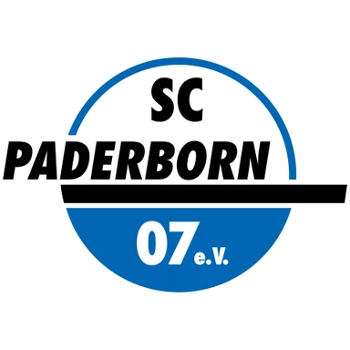

Айнтрахт Франкфурт — Хоффенхайм прогноз на матч 21 ноября
Расчёт модели
- 2,1 : 1,8ожидаемые голы
- 76 %тотал больше 2,5
- 74 %обе забьют
Цифры считает модель по данным сайта, а не эксперт. Это вероятности, а не гарантия исхода. Как считает модель · словарь терминов.
- ТурнирБундеслига
Коротко о матче
По форме команды близки: в пяти последних матчах Айнтрахт Франкфурт — 2 победы, Хоффенхайм — 3 победы. Слабое место — оборона: Айнтрахт Франкфурт — в среднем 2,0 пропущенного мяча за игру в этих пяти матчах, так что у соперника будут моменты.
Обе команды играют результативно: больше 2,5 мячей набиралось в 12 из 16 их последних матчей. Стоит учесть и площадку: дома Айнтрахт Франкфурт — 2 победы в 4 матчах, на выезде Хоффенхайм — 1 победа в 6. В последний раз команды встречались 24 января 2026 года: Айнтрахт Франкфурт — Хоффенхайм 1:3.
Модель чуть выше оценивает шансы одной стороны: Айнтрахт Франкфурт — 46 % на победу. Это оценка по данным, а не обещание исхода.
Форма: последние матчи
Айнтрахт Франкфурт 2 победы из 5
 П0:6
П0:6 В1:0
В1:0 П0:1
П0:1- В3:1

Н2:2
 Хоффенхайм 3 победы из 5
Хоффенхайм 3 победы из 5
 В3:0
В3:0 В3:0
В3:0 П0:2
П0:2 Н1:1
Н1:1 В2:1
В2:1
Личные встречи
- Айнтрахт Франкфурт1:3Хоффенхайм
- Хоффенхайм1:3Айнтрахт Франкфурт
Положение в таблице
| Команда | Место | И | В | Н | П | Голы | Очки |
|---|---|---|---|---|---|---|---|
| Айнтрахт Франкфурт | 10 | 9 | 3 | 3 | 3 | 15:20 | 12 |
| 9 | 9 | 4 | 0 | 5 | 16:17 | 12 |
Куда дальше
Материалы носят информационный характер и не гарантируют результат. Реклама букмекеров на сайте не размещается. Сайт только для совершеннолетних (18+).